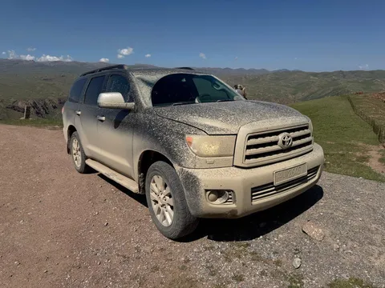

Как уже выше писал, я провел позапрошлую неделю в отпуске, путешествуя по Кыргызстану. Организовывал всю поездку сам, и перемещался по стране тоже сам. Разумеется, на тачке. Без машины там делать нечего (впрочем, я все равно везде беру машины, потому что только авто дает тебе максимальную свободу в выборе марштура, графика, темпа).
Понимая, что дороги там есть, кхм, не везде, выбирал изначально из внедорожников. Среди внедорожников смотрел на наличие ровного пола задней части салона при сложенных задних рядах (на случай ночевки в авто) и на энерговооруженность в плане внедорожного потенциала.
Свой выбор я остановил на Toyota Sequoia второго поколения, благо в Кыргызстане это довольно распространенный автомобиль. Расскажу вам немного про эту ёлку и то, куда она нас завезла.
Достался нам чудный экземпляр 2008 года с пробегом 383 тысячи километров. "Ага, обкатку прошла" - подумал я. Машина оказалась почти полностью исправна - не работала только понижайка. Полный привод и блокировка межколесного диффа работали, кондей работал, что еще нужно?
Кстати об энерговооруженности. Пару раз выручал важнейший принцип джиперства: едешь на минимальном инвентаре, а уже когда застрял - подрубаешь что-то типа понижайки или блокировок. Потому что если у тебя уже включен весь арсенал, и ты застрял, больше включать нечего. В итоге 95% ехал просто на заднем приводе. Полный потребовался раз 5. Блокировка межосевого диффа - 2 раза. Сзади у ёлки самоблок. Понижайка не пригодилась, и хорошо, ибо она была неисправна)
Однако, на высоте чувствовалось, насколько машине тяжело. На перевалах выше 3500 метров над уровнем моря (а мы добирались и до 4000) кислорода в воздухе явственно недостаточно для нормальной работы атмосферного двигателя. Турбо/компрессор хоть могут нагнать побольше давления воздуха, а атмо откровенно сдувается. Благо, для 5.7 V8 сдуться вполовину - это все еще около 200 сил, чего хватало, чтобы вскарабкаться в гору.
А вот что подводило - так это габариты. Углы въезда и съезда у секвойи отличные - нигде бампера не оставил. Но рампа из-за длиннющей базы очень ограничена, пороги я чутка замял. И ширина не позволяла себя чувствовать уверенно. Смотришь на колею между камнями - вроде ок, а потом понимаешь, что это колея от уазика, который на полметра у'же. В одном месте из-за этого пришлось сдаться, просто не пролез, пошли пешком.
Зато ходовка - просто песня. Шарашить по грунтовкам стабильные 70-80 мало кому дано. Был один грейдер, позволяющий ехать и 90-100. Подвеска секвойи, похоже, тоже исповедует принцип "больше скорость - меньше ям", перелетая их по касательной. Но надо внимательно смотреть за более глубокими ямами и распрыгом - иначе удар, отбой, больно.
У меня даже на четвертый день появился четкий признак качества дороги. Если на 75 км/ч телефон периодически отрывает от magsafe-крепления, значит дорога хреновая. Пока держится - валим 75 км/ч)
И по жиже прет превосходно, несмотря на довольно потрепанную АТ-шную резину (all terrain). Было лишь одно место, где я пожалел. что машина не на МТ (mud terrain). И еще одно, где нас по жиже чуть не стащило на край обрыва из-за поперечного наклона дороги. В целом, для полностью стоковой машины - проходимость впечатляющая.
